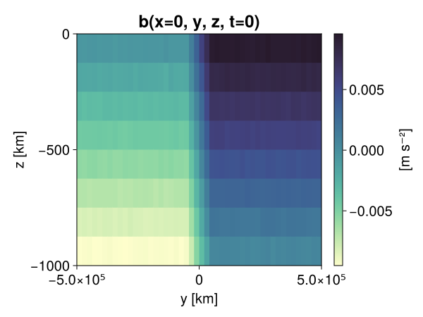
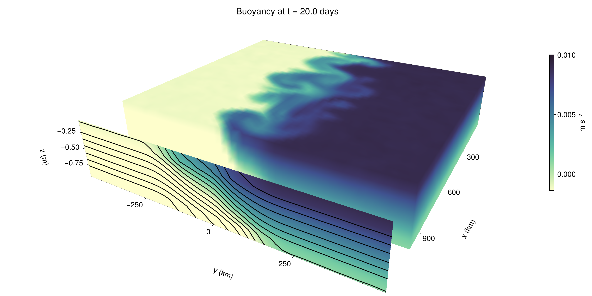

Baroclinic adjustment
In this example, we simulate the evolution and equilibration of a baroclinically unstable front.
Install dependencies
First let's make sure we have all required packages installed.
using Pkg
pkg"add Oceananigans, CairoMakie"using Oceananigans
using Oceananigans.UnitsGrid
We use a three-dimensional channel that is periodic in the x direction:
Lx = 1000kilometers # east-west extent [m]
Ly = 1000kilometers # north-south extent [m]
Lz = 1kilometers # depth [m]
grid = RectilinearGrid(size = (48, 48, 8),
x = (0, Lx),
y = (-Ly/2, Ly/2),
z = (-Lz, 0),
topology = (Periodic, Bounded, Bounded))48×48×8 RectilinearGrid{Float64, Periodic, Bounded, Bounded} on CPU with 3×3×3 halo
├── Periodic x ∈ [0.0, 1.0e6) regularly spaced with Δx=20833.3
├── Bounded y ∈ [-500000.0, 500000.0] regularly spaced with Δy=20833.3
└── Bounded z ∈ [-1000.0, 0.0] regularly spaced with Δz=125.0Model
We built a HydrostaticFreeSurfaceModel with an ImplicitFreeSurface solver. Regarding Coriolis, we use a beta-plane centered at 45° South.
model = HydrostaticFreeSurfaceModel(; grid,
coriolis = BetaPlane(latitude = -45),
buoyancy = BuoyancyTracer(),
tracers = :b,
momentum_advection = WENO(),
tracer_advection = WENO())HydrostaticFreeSurfaceModel{CPU, RectilinearGrid}(time = 0 seconds, iteration = 0)
├── grid: 48×48×8 RectilinearGrid{Float64, Periodic, Bounded, Bounded} on CPU with 3×3×3 halo
├── timestepper: QuasiAdamsBashforth2TimeStepper
├── tracers: b
├── closure: Nothing
├── buoyancy: BuoyancyTracer with ĝ = NegativeZDirection()
├── free surface: ImplicitFreeSurface with gravitational acceleration 9.80665 m s⁻²
│ └── solver: FFTImplicitFreeSurfaceSolver
├── advection scheme:
│ ├── momentum: WENO{3, Float64, Float32}(order=5)
│ └── b: WENO{3, Float64, Float32}(order=5)
├── vertical_coordinate: ZCoordinate
└── coriolis: BetaPlane{Float64}We start our simulation from rest with a baroclinically unstable buoyancy distribution. We use ramp(y, Δy), defined below, to specify a front with width Δy and horizontal buoyancy gradient M². We impose the front on top of a vertical buoyancy gradient N² and a bit of noise.
"""
ramp(y, Δy)
Linear ramp from 0 to 1 between -Δy/2 and +Δy/2.
For example:
```
y < -Δy/2 => ramp = 0
-Δy/2 < y < -Δy/2 => ramp = y / Δy
y > Δy/2 => ramp = 1
```
"""
ramp(y, Δy) = min(max(0, y/Δy + 1/2), 1)
N² = 1e-5 # [s⁻²] buoyancy frequency / stratification
M² = 1e-7 # [s⁻²] horizontal buoyancy gradient
Δy = 100kilometers # width of the region of the front
Δb = Δy * M² # buoyancy jump associated with the front
ϵb = 1e-2 * Δb # noise amplitude
bᵢ(x, y, z) = N² * z + Δb * ramp(y, Δy) + ϵb * randn()
set!(model, b=bᵢ)Let's visualize the initial buoyancy distribution.
using CairoMakie
set_theme!(Theme(fontsize = 20))
# Build coordinates with units of kilometers
x, y, z = 1e-3 .* nodes(grid, (Center(), Center(), Center()))
b = model.tracers.b
fig, ax, hm = heatmap(view(b, 1, :, :),
colormap = :deep,
axis = (xlabel = "y [km]",
ylabel = "z [km]",
title = "b(x=0, y, z, t=0)",
titlesize = 24))
Colorbar(fig[1, 2], hm, label = "[m s⁻²]")
fig
Simulation
Now let's build a Simulation.
simulation = Simulation(model, Δt=20minutes, stop_time=20days)Simulation of HydrostaticFreeSurfaceModel{CPU, RectilinearGrid}(time = 0 seconds, iteration = 0)
├── Next time step: 20 minutes
├── Elapsed wall time: 0 seconds
├── Wall time per iteration: NaN days
├── Stop time: 20 days
├── Stop iteration: Inf
├── Wall time limit: Inf
├── Minimum relative step: 0.0
├── Callbacks: OrderedDict with 4 entries:
│ ├── stop_time_exceeded => 4
│ ├── stop_iteration_exceeded => -
│ ├── wall_time_limit_exceeded => e
│ └── nan_checker => }
├── Output writers: OrderedDict with no entries
└── Diagnostics: OrderedDict with no entriesWe add a TimeStepWizard callback to adapt the simulation's time-step,
conjure_time_step_wizard!(simulation, IterationInterval(20), cfl=0.2, max_Δt=20minutes)Also, we add a callback to print a message about how the simulation is going,
using Printf
wall_clock = Ref(time_ns())
function print_progress(sim)
u, v, w = model.velocities
progress = 100 * (time(sim) / sim.stop_time)
elapsed = (time_ns() - wall_clock[]) / 1e9
@printf("[%05.2f%%] i: %d, t: %s, wall time: %s, max(u): (%6.3e, %6.3e, %6.3e) m/s, next Δt: %s\n",
progress, iteration(sim), prettytime(sim), prettytime(elapsed),
maximum(abs, u), maximum(abs, v), maximum(abs, w), prettytime(sim.Δt))
wall_clock[] = time_ns()
return nothing
end
add_callback!(simulation, print_progress, IterationInterval(100))Diagnostics/Output
Here, we save the buoyancy, $b$, at the edges of our domain as well as the zonal ($x$) average of buoyancy.
u, v, w = model.velocities
ζ = ∂x(v) - ∂y(u)
B = Average(b, dims=1)
U = Average(u, dims=1)
V = Average(v, dims=1)
filename = "baroclinic_adjustment"
save_fields_interval = 0.5day
slicers = (east = (grid.Nx, :, :),
north = (:, grid.Ny, :),
bottom = (:, :, 1),
top = (:, :, grid.Nz))
for side in keys(slicers)
indices = slicers[side]
simulation.output_writers[side] = JLD2Writer(model, (; b, ζ);
filename = filename * "_$(side)_slice",
schedule = TimeInterval(save_fields_interval),
overwrite_existing = true,
indices)
end
simulation.output_writers[:zonal] = JLD2Writer(model, (; b=B, u=U, v=V);
filename = filename * "_zonal_average",
schedule = TimeInterval(save_fields_interval),
overwrite_existing = true)JLD2Writer scheduled on TimeInterval(12 hours):
├── filepath: baroclinic_adjustment_zonal_average.jld2
├── 3 outputs: (b, u, v)
├── array_type: Array{Float32}
├── including: [:grid, :coriolis, :buoyancy, :closure]
├── file_splitting: NoFileSplitting
└── file size: 32.5 KiBNow we're ready to run.
@info "Running the simulation..."
run!(simulation)
@info "Simulation completed in " * prettytime(simulation.run_wall_time)[ Info: Running the simulation...
[ Info: Initializing simulation...
[00.00%] i: 0, t: 0 seconds, wall time: 34.321 seconds, max(u): (0.000e+00, 0.000e+00, 0.000e+00) m/s, next Δt: 20 minutes
[ Info: ... simulation initialization complete (30.572 seconds)
[ Info: Executing initial time step...
[ Info: ... initial time step complete (25.052 seconds).
[06.94%] i: 100, t: 1.389 days, wall time: 48.842 seconds, max(u): (1.248e-01, 1.144e-01, 1.571e-03) m/s, next Δt: 20 minutes
[13.89%] i: 200, t: 2.778 days, wall time: 813.694 ms, max(u): (2.158e-01, 1.792e-01, 1.846e-03) m/s, next Δt: 20 minutes
[20.83%] i: 300, t: 4.167 days, wall time: 676.782 ms, max(u): (3.183e-01, 2.437e-01, 1.708e-03) m/s, next Δt: 20 minutes
[27.78%] i: 400, t: 5.556 days, wall time: 692.417 ms, max(u): (4.029e-01, 3.824e-01, 1.858e-03) m/s, next Δt: 20 minutes
[34.72%] i: 500, t: 6.944 days, wall time: 709.108 ms, max(u): (4.787e-01, 5.613e-01, 1.875e-03) m/s, next Δt: 20 minutes
[41.67%] i: 600, t: 8.333 days, wall time: 638.861 ms, max(u): (6.436e-01, 8.243e-01, 2.822e-03) m/s, next Δt: 20 minutes
[48.61%] i: 700, t: 9.722 days, wall time: 683.636 ms, max(u): (9.963e-01, 1.120e+00, 3.514e-03) m/s, next Δt: 20 minutes
[55.56%] i: 800, t: 11.111 days, wall time: 679.247 ms, max(u): (1.281e+00, 1.186e+00, 4.210e-03) m/s, next Δt: 20 minutes
[62.50%] i: 900, t: 12.500 days, wall time: 658.116 ms, max(u): (1.373e+00, 1.240e+00, 5.220e-03) m/s, next Δt: 20 minutes
[69.44%] i: 1000, t: 13.889 days, wall time: 722.653 ms, max(u): (1.285e+00, 1.174e+00, 3.486e-03) m/s, next Δt: 20 minutes
[76.39%] i: 1100, t: 15.278 days, wall time: 649.868 ms, max(u): (1.350e+00, 1.099e+00, 3.063e-03) m/s, next Δt: 20 minutes
[83.33%] i: 1200, t: 16.667 days, wall time: 716.178 ms, max(u): (1.430e+00, 1.069e+00, 3.346e-03) m/s, next Δt: 20 minutes
[90.28%] i: 1300, t: 18.056 days, wall time: 689.283 ms, max(u): (1.546e+00, 9.842e-01, 3.524e-03) m/s, next Δt: 20 minutes
[97.22%] i: 1400, t: 19.444 days, wall time: 697.325 ms, max(u): (1.405e+00, 1.087e+00, 2.654e-03) m/s, next Δt: 20 minutes
[ Info: Simulation is stopping after running for 1.154 minutes.
[ Info: Simulation time 20 days equals or exceeds stop time 20 days.
[ Info: Simulation completed in 1.155 minutes
Visualization
All that's left is to make a pretty movie. Actually, we make two visualizations here. First, we illustrate how to make a 3D visualization with Makie's Axis3 and Makie.surface. Then we make a movie in 2D. We use CairoMakie in this example, but note that using GLMakie is more convenient on a system with OpenGL, as figures will be displayed on the screen.
using CairoMakieThree-dimensional visualization
We load the saved buoyancy output on the top, north, and east surface as FieldTimeSerieses.
filename = "baroclinic_adjustment"
sides = keys(slicers)
slice_filenames = NamedTuple(side => filename * "_$(side)_slice.jld2" for side in sides)
b_timeserieses = (east = FieldTimeSeries(slice_filenames.east, "b"),
north = FieldTimeSeries(slice_filenames.north, "b"),
top = FieldTimeSeries(slice_filenames.top, "b"))
B_timeseries = FieldTimeSeries(filename * "_zonal_average.jld2", "b")
times = B_timeseries.times
grid = B_timeseries.grid48×48×8 RectilinearGrid{Float64, Periodic, Bounded, Bounded} on CPU with 3×3×3 halo
├── Periodic x ∈ [0.0, 1.0e6) regularly spaced with Δx=20833.3
├── Bounded y ∈ [-500000.0, 500000.0] regularly spaced with Δy=20833.3
└── Bounded z ∈ [-1000.0, 0.0] regularly spaced with Δz=125.0We build the coordinates. We rescale horizontal coordinates to kilometers.
xb, yb, zb = nodes(b_timeserieses.east)
xb = xb ./ 1e3 # convert m -> km
yb = yb ./ 1e3 # convert m -> km
Nx, Ny, Nz = size(grid)
x_xz = repeat(x, 1, Nz)
y_xz_north = y[end] * ones(Nx, Nz)
z_xz = repeat(reshape(z, 1, Nz), Nx, 1)
x_yz_east = x[end] * ones(Ny, Nz)
y_yz = repeat(y, 1, Nz)
z_yz = repeat(reshape(z, 1, Nz), grid.Ny, 1)
x_xy = x
y_xy = y
z_xy_top = z[end] * ones(grid.Nx, grid.Ny)Then we create a 3D axis. We use zonal_slice_displacement to control where the plot of the instantaneous zonal average flow is located.
fig = Figure(size = (1600, 800))
zonal_slice_displacement = 1.2
ax = Axis3(fig[2, 1],
aspect=(1, 1, 1/5),
xlabel = "x (km)",
ylabel = "y (km)",
zlabel = "z (m)",
xlabeloffset = 100,
ylabeloffset = 100,
zlabeloffset = 100,
limits = ((x[1], zonal_slice_displacement * x[end]), (y[1], y[end]), (z[1], z[end])),
elevation = 0.45,
azimuth = 6.8,
xspinesvisible = false,
zgridvisible = false,
protrusions = 40,
perspectiveness = 0.7)Axis3()We use data from the final savepoint for the 3D plot. Note that this plot can easily be animated by using Makie's Observable. To dive into Observables, check out Makie.jl's Documentation.
n = length(times)41Now let's make a 3D plot of the buoyancy and in front of it we'll use the zonally-averaged output to plot the instantaneous zonal-average of the buoyancy.
b_slices = (east = interior(b_timeserieses.east[n], 1, :, :),
north = interior(b_timeserieses.north[n], :, 1, :),
top = interior(b_timeserieses.top[n], :, :, 1))
# Zonally-averaged buoyancy
B = interior(B_timeseries[n], 1, :, :)
clims = 1.1 .* extrema(b_timeserieses.top[n][:])
kwargs = (colorrange=clims, colormap=:deep, shading=NoShading)
surface!(ax, x_yz_east, y_yz, z_yz; color = b_slices.east, kwargs...)
surface!(ax, x_xz, y_xz_north, z_xz; color = b_slices.north, kwargs...)
surface!(ax, x_xy, y_xy, z_xy_top; color = b_slices.top, kwargs...)
sf = surface!(ax, zonal_slice_displacement .* x_yz_east, y_yz, z_yz; color = B, kwargs...)
contour!(ax, y, z, B; transformation = (:yz, zonal_slice_displacement * x[end]),
levels = 15, linewidth = 2, color = :black)
Colorbar(fig[2, 2], sf, label = "m s⁻²", height = Relative(0.4), tellheight=false)
title = "Buoyancy at t = " * string(round(times[n] / day, digits=1)) * " days"
fig[1, 1:2] = Label(fig, title; fontsize = 24, tellwidth = false, padding = (0, 0, -120, 0))
rowgap!(fig.layout, 1, Relative(-0.2))
colgap!(fig.layout, 1, Relative(-0.1))
save("baroclinic_adjustment_3d.png", fig)
Two-dimensional movie
We make a 2D movie that shows buoyancy $b$ and vertical vorticity $ζ$ at the surface, as well as the zonally-averaged zonal and meridional velocities $U$ and $V$ in the $(y, z)$ plane. First we load the FieldTimeSeries and extract the additional coordinates we'll need for plotting
ζ_timeseries = FieldTimeSeries(slice_filenames.top, "ζ")
U_timeseries = FieldTimeSeries(filename * "_zonal_average.jld2", "u")
B_timeseries = FieldTimeSeries(filename * "_zonal_average.jld2", "b")
V_timeseries = FieldTimeSeries(filename * "_zonal_average.jld2", "v")
xζ, yζ, zζ = nodes(ζ_timeseries)
yv = ynodes(V_timeseries)
xζ = xζ ./ 1e3 # convert m -> km
yζ = yζ ./ 1e3 # convert m -> km
yv = yv ./ 1e3 # convert m -> km-500.0:20.833333333333332:500.0Next, we set up a plot with 4 panels. The top panels are large and square, while the bottom panels get a reduced aspect ratio through rowsize!.
fig = Figure(size=(1800, 1000))
axb = Axis(fig[1, 2], xlabel="x (km)", ylabel="y (km)", aspect=1)
axζ = Axis(fig[1, 3], xlabel="x (km)", ylabel="y (km)", aspect=1, yaxisposition=:right)
axu = Axis(fig[2, 2], xlabel="y (km)", ylabel="z (m)")
axv = Axis(fig[2, 3], xlabel="y (km)", ylabel="z (m)", yaxisposition=:right)
rowsize!(fig.layout, 2, Relative(0.3))To prepare a plot for animation, we index the timeseries with an Observable,
n = Observable(1)
b_top = @lift interior(b_timeserieses.top[$n], :, :, 1)
ζ_top = @lift interior(ζ_timeseries[$n], :, :, 1)
U = @lift interior(U_timeseries[$n], 1, :, :)
V = @lift interior(V_timeseries[$n], 1, :, :)
B = @lift interior(B_timeseries[$n], 1, :, :)Observable([-0.0093909977003932 -0.00814687181264162 -0.006890334654599428 -0.0056226616725325584 -0.004376821685582399 -0.003113042563199997 -0.0018740490777418017 -0.0006134029827080667; -0.009369670413434505 -0.008110287599265575 -0.0068795629777014256 -0.005624322686344385 -0.0043732775375247 -0.0031583961099386215 -0.0018795749638229609 -0.000636777956970036; -0.009356114082038403 -0.008142241276800632 -0.006887013558298349 -0.005643512587994337 -0.004372865427285433 -0.0031220857053995132 -0.0018531150417402387 -0.0006013812962919474; -0.00940616149455309 -0.008116146549582481 -0.006880330853164196 -0.005617075599730015 -0.004358402453362942 -0.003095962107181549 -0.0018588562961667776 -0.0006150074186734855; -0.009355587884783745 -0.008112946525216103 -0.006868558004498482 -0.005623562727123499 -0.004367577377706766 -0.003128604730591178 -0.0019023685017600656 -0.0006112938863225281; -0.00938504096120596 -0.008129026740789413 -0.006853210274130106 -0.005596672650426626 -0.004362889565527439 -0.003114241873845458 -0.0019040326587855816 -0.0006220079376362264; -0.009394238702952862 -0.00813944824039936 -0.006864816416054964 -0.005612997338175774 -0.004364244174212217 -0.0031286790035665035 -0.001886471756733954 -0.0006261918460950255; -0.00936216115951538 -0.008141384460031986 -0.006873962935060263 -0.005626499652862549 -0.004381672013550997 -0.0031153082381933928 -0.001875128480605781 -0.0006358576356433332; -0.009397907182574272 -0.008128912188112736 -0.0068610962480306625 -0.005635594949126244 -0.00440317252650857 -0.003109797602519393 -0.0018522650934755802 -0.0006406803149729967; -0.009382535703480244 -0.00813413318246603 -0.006881757639348507 -0.005626583006232977 -0.004371856804937124 -0.0031216356437653303 -0.0018659509951248765 -0.0006242127274163067; -0.009374062530696392 -0.008132204413414001 -0.006869742181152105 -0.005619708448648453 -0.004374079871922731 -0.003130954224616289 -0.0018734709592536092 -0.0006338112871162593; -0.009369448758661747 -0.008142855018377304 -0.0068925912491977215 -0.005609373562037945 -0.004374834708869457 -0.0031143436208367348 -0.0018785010324791074 -0.0006563472561538219; -0.009383168071508408 -0.008112562820315361 -0.006877949461340904 -0.005614331923425198 -0.004399110563099384 -0.0031185117550194263 -0.001868964871391654 -0.0006470404332503676; -0.009390358813107014 -0.008115837350487709 -0.006878896616399288 -0.0056547136045992374 -0.004355176351964474 -0.003123711561784148 -0.001890602521598339 -0.0005983845912851393; -0.009372075088322163 -0.00813470408320427 -0.006840997841209173 -0.005627188831567764 -0.0043757907114923 -0.0031406120397150517 -0.0018782417755573988 -0.0006169798434711993; -0.009397795423865318 -0.008136033080518246 -0.006889489013701677 -0.005657888017594814 -0.004382659215480089 -0.003128470154479146 -0.001872114255093038 -0.0006578728789463639; -0.009361682459712029 -0.008100924082100391 -0.0068686483427882195 -0.005594242829829454 -0.004376270808279514 -0.003122080583125353 -0.0018811501795426011 -0.0006094914861023426; -0.009384443052113056 -0.008125054650008678 -0.006874449085444212 -0.005617585498839617 -0.004412988666445017 -0.003116536419838667 -0.0018809656612575054 -0.0006241593509912491; -0.009388789534568787 -0.008132812567055225 -0.006857501342892647 -0.005609267391264439 -0.0043609836138784885 -0.003124461742118001 -0.0018682434456422925 -0.0006308620213530958; -0.009378026239573956 -0.008160669356584549 -0.006885455455631018 -0.005637584254145622 -0.004369441419839859 -0.0031061843037605286 -0.0018687653355300426 -0.0006209128187038004; -0.00938867125660181 -0.008119171485304832 -0.006873316131532192 -0.005604989361017942 -0.004363061860203743 -0.0031526980455964804 -0.0018789663445204496 -0.0006326554575935006; -0.009371647611260414 -0.00813446193933487 -0.006877961568534374 -0.005624342244118452 -0.004372960887849331 -0.0031146432738751173 -0.0018822848796844482 -0.000626826542429626; -0.0075019230134785175 -0.006244445685297251 -0.004976117983460426 -0.0037640323862433434 -0.002493626903742552 -0.0012475104304030538 1.4872192878101487e-5 0.0012746747815981507; -0.005401534028351307 -0.004152882844209671 -0.0029313608538359404 -0.001671369536779821 -0.00044012811849825084 0.0008164412574842572 0.002108642365783453 0.003321569412946701; -0.0033262905199080706 -0.002068320522084832 -0.0008061474072746933 0.00043579473276622593 0.001648363540880382 0.002895468147471547 0.0041739256121218204 0.005431666970252991; -0.0012750965543091297 1.538028527647839e-6 0.00125473877415061 0.002502894727513194 0.003746381727978587 0.0049935500137507915 0.00624241353943944 0.007485887501388788; 0.0006571143749170005 0.001889371545985341 0.003095849184319377 0.004379552789032459 0.00562521954998374 0.006864567752927542 0.008150776848196983 0.009366200305521488; 0.0006181171047501266 0.001882412121631205 0.003121421905234456 0.0043601286597549915 0.005630982108414173 0.006862762849777937 0.008127898909151554 0.009382108226418495; 0.0006318361265584826 0.0018756756326183677 0.003108080942183733 0.0043748789466917515 0.005635113921016455 0.006868056021630764 0.008109086193144321 0.009397963993251324; 0.0006185016827657819 0.0018701545195654035 0.003144431859254837 0.00436598714441061 0.005626253318041563 0.006854131352156401 0.008110672235488892 0.00935902539640665; 0.0006212054868228734 0.00191309314686805 0.003089897334575653 0.0043642823584377766 0.005654848180711269 0.006879450753331184 0.008158202283084393 0.00938352756202221; 0.0006373588694259524 0.0018786995206028223 0.0031104092486202717 0.0043770247139036655 0.005616107955574989 0.006849393714219332 0.008147956803441048 0.009352002292871475; 0.0006360866245813668 0.0018542073667049408 0.003137745661661029 0.004389890003949404 0.005638609174638987 0.0068651423789560795 0.008119470439851284 0.00936440285295248; 0.0006181995267979801 0.001862688921391964 0.0031189059372991323 0.004395489580929279 0.005634389817714691 0.006838379427790642 0.008139644749462605 0.009404690004885197; 0.0006202783551998436 0.0018476031254976988 0.003108867909759283 0.004382441285997629 0.00563997495919466 0.006864326074719429 0.008126338943839073 0.009392994455993176; 0.0006436065305024385 0.0018980075838044286 0.0031144283711910248 0.004367869812995195 0.005610619205981493 0.006862175185233355 0.008142438717186451 0.009345500729978085; 0.0006014808895997703 0.0018886388279497623 0.003128400770947337 0.004385615698993206 0.005628078710287809 0.006871140096336603 0.00812110211700201 0.00937279500067234; 0.0006269594887271523 0.0018809017492458224 0.003141077933833003 0.004386449232697487 0.005625126417726278 0.006870747078210115 0.00810912624001503 0.009395130909979343; 0.0006180010968819261 0.0018719724612310529 0.00311406166292727 0.004371331539005041 0.005628000013530254 0.006886662915349007 0.008150550536811352 0.009386463090777397; 0.000650809146463871 0.0018533080583438277 0.0031460521277040243 0.004377685021609068 0.0056266444735229015 0.006881865672767162 0.00812085997313261 0.00936562567949295; 0.0006237162742763758 0.0018536687130108476 0.0031250787433236837 0.004385181702673435 0.0056144678965210915 0.006881088949739933 0.008110948838293552 0.009382445365190506; 0.0006496607093140483 0.0019120798679068685 0.0031189932487905025 0.004390463698655367 0.005612666718661785 0.006849358323961496 0.008109449408948421 0.009384047240018845; 0.0006196476751938462 0.0018680683569982648 0.003123015630990267 0.004378885962069035 0.005601197946816683 0.006892532110214233 0.008129827678203583 0.009330777451395988; 0.0006258618086576462 0.0018693838501349092 0.00311833992600441 0.004374065902084112 0.005630255211144686 0.0068795145489275455 0.008110098540782928 0.009388613514602184; 0.0006474348483607173 0.0018666057148948312 0.0031122704967856407 0.0043804831802845 0.005641201976686716 0.006855417974293232 0.008155453950166702 0.009401748888194561; 0.0006178710027597845 0.0018635408487170935 0.0031404534820467234 0.004392007831484079 0.005633463617414236 0.00686709675937891 0.008103983476758003 0.009364988654851913; 0.0006342870183289051 0.001856613322161138 0.0031201320234686136 0.0043623438104987144 0.005611081141978502 0.0068749538622796535 0.008135541342198849 0.00935588963329792; 0.0006378278485499322 0.001878082868643105 0.003115253057330847 0.0043655578047037125 0.005611877888441086 0.0068998378701508045 0.008129236288368702 0.009375705383718014])
and then build our plot:
hm = heatmap!(axb, xb, yb, b_top, colorrange=(0, Δb), colormap=:thermal)
Colorbar(fig[1, 1], hm, flipaxis=false, label="Surface b(x, y) (m s⁻²)")
hm = heatmap!(axζ, xζ, yζ, ζ_top, colorrange=(-5e-5, 5e-5), colormap=:balance)
Colorbar(fig[1, 4], hm, label="Surface ζ(x, y) (s⁻¹)")
hm = heatmap!(axu, yb, zb, U; colorrange=(-5e-1, 5e-1), colormap=:balance)
Colorbar(fig[2, 1], hm, flipaxis=false, label="Zonally-averaged U(y, z) (m s⁻¹)")
contour!(axu, yb, zb, B; levels=15, color=:black)
hm = heatmap!(axv, yv, zb, V; colorrange=(-1e-1, 1e-1), colormap=:balance)
Colorbar(fig[2, 4], hm, label="Zonally-averaged V(y, z) (m s⁻¹)")
contour!(axv, yb, zb, B; levels=15, color=:black)Finally, we're ready to record the movie.
frames = 1:length(times)
record(fig, filename * ".mp4", frames, framerate=8) do i
n[] = i
endThis page was generated using Literate.jl.